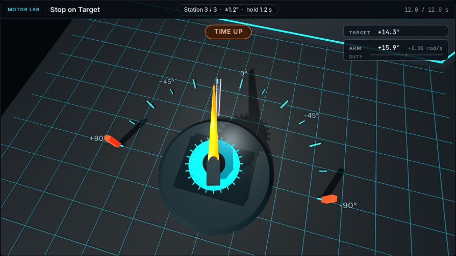

Hold requirement
The station specifies a tolerance and hold duration. A brief crossing does not complete the hold.
ME41006 · Learning notes · 01
Observe how motor commands become motion, and how feedback changes positioning and tracking.
The three lessons change what the controller knows and what the target does.
Apply a fixed command, cut the power, and observe the arm coasting.
Use encoder feedback to enter and hold three progressively narrower zones.
Maintain alignment while the target moves, accelerates, and reverses.
The arm position, target position, and command can be inspected together.

The station specifies a tolerance and hold duration. A brief crossing does not complete the hold.
Compare the requested angle with the measured angle and motor command.
The arm coasts after the motor command ends.
The plotted error is the difference between the target and measured joint position.

The summary reports two stations held. Completion depends on the sustained hold.
A sign change indicates that the arm has passed the requested position.
A small error can remain outside a narrow tolerance. Read it against the shaded zone.
Record the change, seed, and result so that successive runs can be compared.
RESPONSE SPEEDHow quickly does the arm reach the target region?
OVERSHOOT & HOLDDoes it cross the target, leave the zone, or remain within it?
TRACKINGHow does the response change when the target moves rather than stays still?